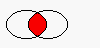
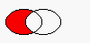
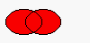

| Home · All Classes · Main Classes · Annotated · Grouped Classes · Functions |
The QRegion class specifies a clip region for a painter. More...
#include <QRegion>
Part of the QtGui module.
The QRegion class specifies a clip region for a painter.
QRegion is used with QPainter::setClipRegion() to limit the paint area to what needs to be painted. There is also a QWidget::repaint() function that takes a QRegion parameter. QRegion is the best tool for reducing flicker.
A region can be created from a rectangle, an ellipse, a polygon or a bitmap. Complex regions may be created by combining simple regions using unite(), intersect(), subtract(), or eor() (exclusive or). You can move a region using translate().
You can test whether a region isEmpty() or if it contains() a QPoint or QRect. The bounding rectangle can be found with boundingRect().
The function rects() gives a decomposition of the region into rectangles.
Example of using complex regions:
void MyWidget::paintEvent(QPaintEvent *)
{
QPainter p; // our painter
QRegion r1(QRect(100,100,200,80), // r1 = elliptic region
QRegion::Ellipse);
QRegion r2(QRect(100,120,90,30)); // r2 = rectangular region
QRegion r3 = r1.intersect(r2); // r3 = intersection
p.begin(this); // start painting widget
p.setClipRegion(r3); // set clip region
... // paint clipped graphics
p.end(); // painting done
}
QRegion is an implicitly shared class.
Warning: Due to window system limitations, the whole coordinate space for a region is limited to the points between -32767 and 32767 on Windows 95/98/ME. You can circumvent this limitation by using a QPainterPath.
See also QPainter::setClipRegion(), QPainter::setClipRect(), and QPainterPath.
Specifies the shape of the region to be created.
| Constant | Value | Description |
|---|---|---|
| QRegion::Rectangle | 0 | the region covers the entire rectangle. |
| QRegion::Ellipse | 1 | the region is an ellipse inside the rectangle. |
Constructs an empty region.
See also isEmpty().
Constructs a rectangular or elliptic region.
If t is Rectangle, the region is the filled rectangle (x, y, w, h). If t is Ellipse, the region is the filled ellipse with center at (x + w / 2, y + h / 2) and size (w ,h).
Constructs a polygon region from the point array a with the fill rule specified by fillRule.
If fillRule is Qt::WindingFill, the polygon region is defined using the winding algorithm; if it is Qt::OddEvenFill, the odd-even fill algorithm is used.
Warning: This constructor can be used to create complex regions that will slow down painting when used.
Constructs a new region which is equal to region r.
Constructs a region from the bitmap bm.
The resulting region consists of the pixels in bitmap bm that are Qt::color1, as if each pixel was a 1 by 1 rectangle.
This constructor may create complex regions that will slow down painting when used. Note that drawing masked pixmaps can be done much faster using QPixmap::setMask().
Create a region based on the rectange r with region type t.
If the rectangle is invalid a null region will be created.
See also QRegion::RegionType.
Destroys the region.
Returns the bounding rectangle of this region. An empty region gives a rectangle that is QRect::isNull().
Returns true if the region contains the point p; otherwise returns false.
This is an overloaded member function, provided for convenience. It behaves essentially like the above function.
Returns true if the region overlaps the rectangle r; otherwise returns false.
Returns a region which is the exclusive or (XOR) of this region and r.
The figure shows the exclusive or of two elliptical regions.
Returns a platform-specific region handle. The Handle type is HRGN on Windows, Region on X11, and RgnHandle on Mac OS X.
Warning: This function is not portable.
This is an overloaded member function, provided for convenience. It behaves essentially like the above function.
This is an overloaded member function, provided for convenience. It behaves essentially like the above function.
Returns a region which is the intersection of this region and r.

The figure shows the intersection of two elliptical regions.
Returns true if the region is empty; otherwise returns false. An empty region is a region that contains no points.
Example:
QRegion r1(10, 10, 20, 20);
QRegion r2(40, 40, 20, 20);
QRegion r3;
r1.isNull(); // false
r1.isEmpty(); // false
r3.isNull(); // true
r3.isEmpty(); // true
r3 = r1.intersect(r2); // r3 = intersection of r1 and r2
r3.isNull(); // false
r3.isEmpty(); // true
r3 = r1.unite(r2); // r3 = union of r1 and r2
r3.isNull(); // false
r3.isEmpty(); // false
Returns an array of non-overlapping rectangles that make up the region.
The union of all the rectangles is equal to the original region.
Returns a region which is r subtracted from this region.

The figure shows the result when the ellipse on the right is subtracted from the ellipse on the left. (left-right)
Translates (moves) the region dx along the X axis and dy along the Y axis.
This is an overloaded member function, provided for convenience. It behaves essentially like the above function.
Translates to the given point.
Returns a region which is the union of this region and r.

The figure shows the union of two elliptical regions.
Returns the region as a QVariant
Returns true if this region is different from the other region; otherwise returns false.
Applies the intersect() function to this region and r. r1&r2 is equivalent to r1.intersect(r2)
See also intersect().
Applies the intersect() function to this region and r and assigns the result to this region. r1&=r2 is equivalent to r1=r1.intersect(r2)
See also intersect().
Applies the unite() function to this region and r. r1+r2 is equivalent to r1.unite(r2)
See also unite() and operator|().
Applies the unite() function to this region and r and assigns the result to this region. r1+=r2 is equivalent to r1=r1.unite(r2)
See also intersect().
Applies the subtract() function to this region and r. r1-r2 is equivalent to r1.subtract(r2)
See also subtract().
Applies the subtract() function to this region and r and assigns the result to this region. r1-=r2 is equivalent to r1=r1.subtract(r2)
See also subtract().
Assigns r to this region and returns a reference to the region.
Returns true if the region is equal to r; otherwise returns false.
Applies the eor() function to this region and r. r1^r2 is equivalent to r1.eor(r2)
See also eor().
Applies the eor() function to this region and r and assigns the result to this region. r1^=r2 is equivalent to r1=r1.eor(r2)
See also eor().
Applies the unite() function to this region and r. r1|r2 is equivalent to r1.unite(r2)
See also unite() and operator+().
Applies the unite() function to this region and r and assigns the result to this region. r1|=r2 is equivalent to r1=r1.unite(r2)
See also unite().
This is an overloaded member function, provided for convenience. It behaves essentially like the above function.
Writes the region r to the stream s and returns a reference to the stream.
See also Format of the QDataStream operators.
This is an overloaded member function, provided for convenience. It behaves essentially like the above function.
Reads a region from the stream s into r and returns a reference to the stream.
See also Format of the QDataStream operators.
| Copyright © 2005 Trolltech | Trademarks | Qt 4.0.0 |